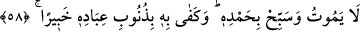
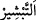
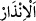
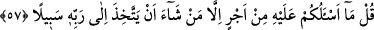
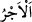

ÖLÜMSÜZ VE DÂİMÂ DİRİ OLAN
ALLAH’A GÜVENİP DAYAN
56. (Rasûlüm!) Biz seni ancak müjdeleyici ve uyarıcı olarak gönderdik.
57. De ki: Buna karşılık, sizden, Rabbine doğru bir yol tutmayı dileyen kimseler
(olmanız) dışında herhangi bir ücret istemiyorum.
58. Ölümsüz ve dâimâ diri olan Allah’a güvenip dayan. O’nu hamd ile tesbih et.
Kullarının günahlarını O’nun bilmesi yeter.
“Biz seni ancak” mü’minleri cennet ve rahmet ile “müjdeleyici ve” kâfirleri
cehennem ateşi ve Allah’ın gazabı ile “uyarıcı olarak gönderdik.”
“
” sevinçli haber vermek/müjdelemek, “
” içinde korkutma olan haber
vermek/uyarmak demektir.
57. De ki: Buna karşılık, sizden, Rabbine doğru bir yol tutmayı dileyen kimseler
(olmanız) dışında herhangi bir ücret istemiyorum.
Onlara “de ki: Buna” gönderilmiş olmaktan da anlaşılacağı üzere risâleti tebliğe
“karşılık, sizden, Rabbine doğru bir yol tutmayı” benim sizi kendilerine dâvet ettiğim
şekilde îman ve amel ile Allah’a yaklaşmayı ve O’nun katında yakınlık elde etmeyi
“dileyen kimseler (olmanız) dışında” sizin tarafınızdan “herhangi bir ücret
istemiyorum.” Aksi halde ‘Bizi kendisine çağırdığı şeye karşılık mallarımızı almak
istiyor. Biz ona tâbi olmayız.’ dersiniz. Yâni eğer bana bir ücret verecekseniz benim
için bu fiili yerine getiriniz. Yoksa ben başkasını istemiyorum. Benim ücretim,
mü’minlerin îmânı ve tâatidir. Çünkü benim için Allah katında büyük bir ecir ve sevap
vardır. Her peygambere, ümmetinin sâlihleri ve âbidlerinin sevapları kadarı verilir.
“
(ücret)”; dünya veya âhiretle ilgili bir amelin karşılığı olarak geri dönen
bedeldir.
Görünen o ki âyetteki istisnâ, munkatı‘dır. Yâni ben sizin mallarınızdan kendim için